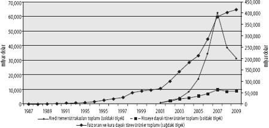

FİNANSAL TÜREV ÜRÜNLERİN YÜKSELİŞİ
Paraya dayalı türev ürünler
Meta üretimine ve ticarete dayalı türev ürünlerin uzun bir tarihi var. Finansal türev ürünler çağı içinse, 20'inci yüzyılın son üçte birlik dilimine kadar beklemek gerekti. Daha öncesinde, 19'uncu yüzyılda pek çok tipte sigorta piyasası geliştiyse de, altın ve/veya gümüşten oluşan emtia-parada hayli istikrarlı kurlar gözlendi ve dolayısıyla kur riskine karşı koruma yönünde herhangi bir talep baş göstermedi. Benzer şekilde, sanayi sermayesinin borçlanma olanağına en mütevazı ölçeklerde başvurması ve faiz oranlarında ancak ılımlı değişikliklerin gözlenmesi, faiz oranlarına ilişkin türev ürünlere yönelik ihtiyacın da son derece sınırlı boyutta kalması anlamına geliyordu. Bu tespitler, İkinci Dünya Savaşı sonrasındaki Bretton Woods Anlaşması dönemi için de kabaca tekrarlanabilir. Yine bu dönemde de, sabitlenen döviz kurları ve ulusların sermaye üzerindeki kısıtlamaları, hem ihtiyaçlar, hem de yasal olanaklar bakımından finansal türev ürünlerin önünü kesmiştir. Aslında, türev ürünlerin pek çok biçiminin ulusal sermaye kısıtlamalarından kaçma girişimleri şeklinde doğduğunu veya hortladığını, ayrıca bunu yaparak Bretton Woods düzeninin fiili çöküşüne katkıda bulunduğunu belirtmeliyiz.
Paraya (para birimlerine ve faiz oranlarına) dayalı türev ürünler, 1970'lerden itibaren boy gösterecekti. 1971'de Bretton Woods Anlaşması'nın resmen sona erişinden itibaren, dünya genelinde para birimleri gittikçe şiddetlenen dalgalanmalar sergilemeye başlayacak, pek çok ülkede sermaye kısıtlamaları kalkacak ve uluslararası fiyat istikrar programları terk edilecekti. Dalgalı kurun ve açık sermaye piyasalarının entelektüel temellerini temin eden serbest piyasacı iktisatçılar, "temeldeki değeri", yani her ülke ekonomisinin "reel" performansını yansıtacağı için, dalgalı kurun istikrar getireceği iddiasındaydılar. Bu performans yavaş yavaş değişecek ve paralel olarak döviz kurları da ancak yavaş kaymalar sergileyebilecekti. Kuramsal açıdan yanlış tasarlandığı apaçık olan bu piyasa bakışı, aynı zamanda deneysel boyutta da bambaşka bir resim ortaya koydu. Döviz piyasaları hiç de beklendiği gibi istikrarlı değil, tersine ileri düzeyde oynaktı ve tahmin edilebilirlik sınırlarının ötesine geçiyordu. Dahası, Avrupa finans piyasalarının eşzamanlı gelişimi, ülke sınırlarını aşan borçlanma ve kredi temininin hızlı bir artış sergilemesi, ayrıca "resmî" piyasalardakinden farklı faiz oranları ve kurlar üzerinden gerçekleşmesi anlamına gelmekteydi.
Oynak döviz kurları ile küresel borç piyasalarının gelişimi üst üste bindiğinde, paranın farklı biçimlerinin taşıdığı değerin gelecekte karşılaşacağı bu yeni belirsizlikler karşısında koruma sağlamak üzere, döviz kurları ve faiz oranlarına dayalı türev ürün piyasaları çabucak büyüdü. Bu ürünlerin gerektirdiği ve genelleştirdiği hassas hesaplamalar, birbirinden uzamsal olarak ayrılan piyasalar arasında arbitraj yapma olanağını da beraberinde getirmekteydi. Türev ürün fiyatlandırma modelleri üzerindeki "bilimsel" gelişmeler ve bilgisayar teknolojisindeki ilerlemeler de bu yayılmaya eklemlenecek şekilde rol oynadı.
Böylece, 1980'lerin başlarından itibaren, finansal türev ürünlerin alım satımını yapan piyasalar hızlı bir büyüme sergileyecekti. Koruma alanları şeklinde gelişen bu piyasalar, gelecekteki kur ve faiz hareketlerinin, yani kârlılık üzerinde derin etkiler doğurabilecek değişikliklerin getireceği risk ve belirsizliklerin ticaretini yapma olanağını sermayeye sunmaktaydı. Temeldeki varlıklar yerine fiyat risklerinin alınıp satıldığı son derece likit piyasalarda, türev ürünler aynı zamanda spekülasyon için de bereketli bir toprak temin etmekteydi. Yalnızca koruma fonları değil, giderek artan ölçüde sanayi kuruluşları ve finans şirketleri de, şu ya da bu düzeyde başarıyla açığa satış yapabilecekleri finans birimleri kurmaktalar. Piyasanın ne kadar büyük bir kısmının spekülasyondan oluştuğunu ölçmek zor. Bugün, spekülatörlük rolleri nedeniyle koruma fonları hemen herkesçe eleştiriliyor. Ancak, 2002'den sonra çok hızlı bir büyüme sergilemelerine karşın, 2006 itibarıyla yönetilen tüm fonlar içerisinde sadece yüzde 2,5'lik paya sahip olduklarını hatırlatmakta fayda var.[19] Yine de, son derece etkin işlemciler olduklarından, koruma fonlarının tüm işlemler içinde yüzde 2,5'ten hayli yüksek bir yer tuttuğunu, oranın kimi piyasalarda yüzde 50'ye kadar çıkabildiğini söyleyelim.[20]
Şekil 1, türev ürün piyasalarının 1987 ile 2009 arasındaki büyümesini göstermek için, en büyük üç türev ürüne ait verileri kullanıyor: paraya (faiz oranları ve kurlar) dayalı türev ürünler, kredilere dayalı türev ürünler ve hisselere dayalı türev ürünler. Grafik, yıl sonunda kapanmamış durumda bulunan sözleşmelerin değeri esas alınarak oluşturuldu.[21] Toplam değerin çok hızlı bir büyüme sergileyerek, 2009'da 415 trilyon $'a vardığını görüyoruz. Krizin zirve yaptığı günlerde, türev ürünlerin genellikle toksik etkiler içerdiğine dair yaygın bir kanının yerleşmiş olmasına karşın, bir miktar hız düşüşü yaşansa da, büyümenin sonraki dönemde yine sürdüğü anlaşılıyor. Kredilere dayalı türev ürünlerin bu duruma istisna teşkil ettiğini belirtelim.
Şekil 1: Dünya Finansal Türev Ürünler Piyasası, Kapatılmamış Nominal Tutarlar, 1987-2009 (milyar dolar)
